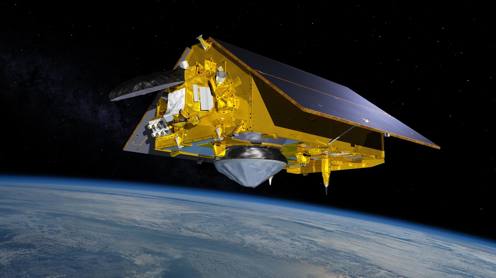
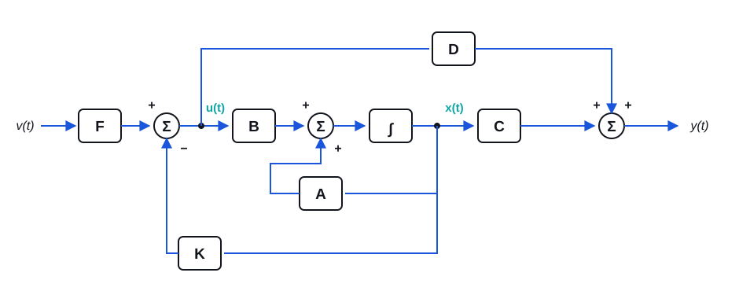
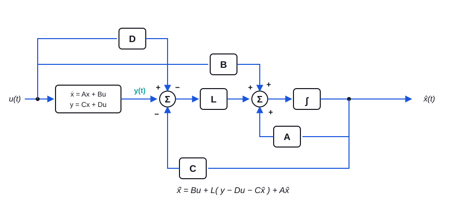
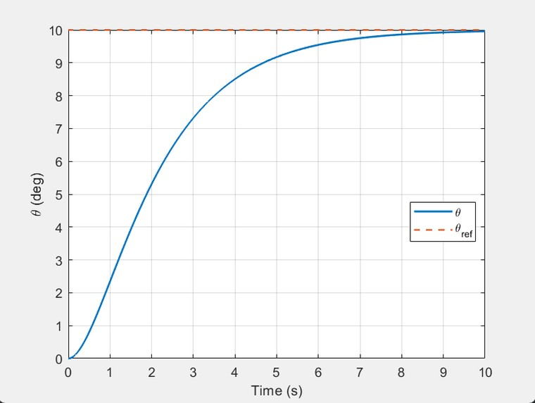
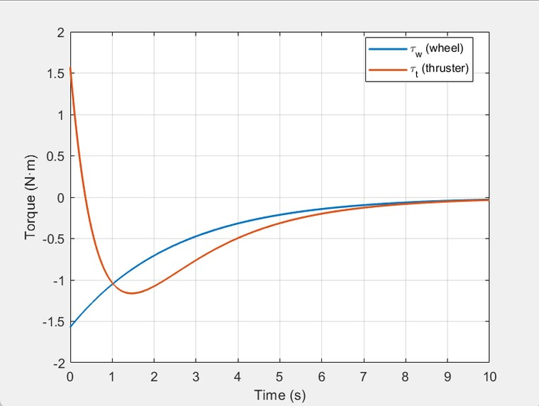
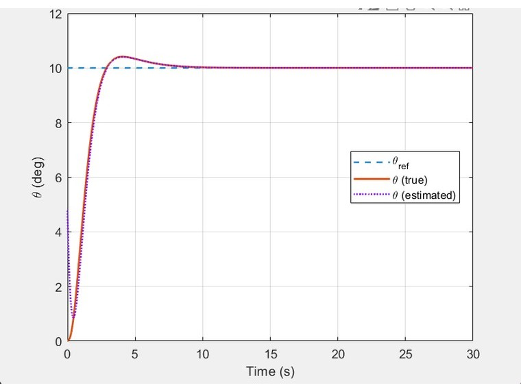

Modern Control · State-Space Design · Estimation
Reaction-Wheel Satellite Attitude Control
A satellite will not return to a commanded orientation on its own — it drifts. This project builds the state-space model that explains why, then designs the feedback and the estimator that fix it.
The system
Third order, two inputs, two measurements.

Modelling
From angular momentum to a state-space plant.
The model starts from rotational dynamics rather than from an assumed transfer function. A reaction wheel exchanges angular momentum with the satellite body; a thruster adds momentum to the whole system from outside. Those are physically different actions, and the model has to keep them distinct.
Newton's rotational torque law gives one second-order equation for the satellite body and one first-order equation for the wheel. The wheel's motor torque appears with opposite signs in the two — it accelerates the wheel while pushing back equally on the body. The thruster torque appears only on the body. Checking the total angular momentum of the combined system confirms the sign convention: the internal wheel torque cancels out, leaving the momentum rate equal to the external thruster torque alone, exactly as it should be.
Choosing the states
One second-order equation plus one first-order equation makes a third-order system, so three states are the minimum: satellite attitude, satellite angular rate, and reaction wheel speed. The two outputs were chosen for what a real spacecraft can actually measure — attitude from sensors, and wheel speed from motor encoder telemetry. The satellite's angular rate is deliberately left unmeasured, which is what motivates the observer later.
Why the open loop drifts
The state matrix is already in Jordan form, with all three eigenvalues at the origin. That alone is not conclusive — what matters is the structure. A two-by-two Jordan block at zero means a double integrator, so any nonzero initial angular rate makes the attitude angle grow linearly and without bound. The satellite drifts and cannot recover on its own. In transfer-function terms the attitude output goes as 1/s² in applied torque, while wheel speed goes as 1/s. Constant torque therefore produces a quadratically growing pointing error.
This is the whole argument for closed-loop control, and it falls out of the model rather than being asserted.
Control design
Placing the poles, then estimating what is missing.
Before designing anything, controllability and observability were verified by rank tests. The controllability matrix comes out full rank, meaning the two torque inputs together have enough authority to drive the system to any state — a precondition for pole placement to be possible at all rather than an afterthought.
State feedback with a reference prefilter
A multi-input state-feedback law places the closed-loop poles in the left half plane, which removes the drift and gives exponential convergence to the commanded attitude. State feedback alone, though, will not track a step command to the right final value — it stabilises without guaranteeing unity DC gain. A reference prefilter scales the command so a 10° request settles at 10°.

A full-order Luenberger observer
Because satellite angular rate is not measured, full-state feedback needs an estimate of it. A full-order observer reconstructs the complete state from the two available measurements. Started deliberately from mismatched initial conditions, the estimated attitude and rate converge onto the true values quickly enough that the controller behaves as though it had been given the real state all along.

Simulation results
Tracking, actuator effort, and estimator convergence.



Trade studies
What the design costs in hardware.
A controller that works in simulation is only useful if the actuators it assumes can be built. Two parametric studies put numbers on that.
- Inertia versus actuator demand. Holding the controller poles fixed and increasing satellite inertia raises peak wheel torque, peak thruster torque, and peak wheel speed substantially. A controller tuned for a small satellite will outrun its actuators on a larger one, even for the same commanded angle.
- Pole location versus effort. With inertias fixed, poles nearer the origin give slower rise and settling but demand far less torque; poles pushed further left respond faster and cost more peak torque. Speed is bought with actuator capability.
Documentation
Report and presentation.
The report carries the full derivation from angular momentum through the state-space model, the stability, controllability and observability analysis, the controller and observer design, and both parametric trade studies. The presentation is the condensed version delivered to the class.